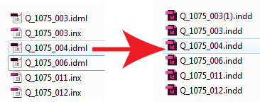
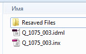
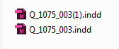

Batch resave INX-IDML files

Opens all INX and IDML files in the selected folder and saves them as INDD documents in the “Resaved Files” subfolder, which is created in the selected folder.
The existing indd-files are never overwritten. An incrementing number is added at the end of the base name in brackets if the file already exists.
Before

After

Click here to download the script.
Tip: According to Peter Spier´s advice, direct conversion of, say, CS3 to CS6 .indd can result in file problems later (not always, but sometimes you don't know until it's too late). Best practice, in his opinion is to export your CS3 files to .inx and open those in CS6. If that's not possible because you no longer have CS3, the next best thing is to open in CS6 and immediately export to .idml, open that and save with a new name so you don't overwrite the old file.
First you can batch-export to inx or idml format with these scripts. Then you can use the Batch resave INX-IDML files script to quickly convert them back to InDesign format.